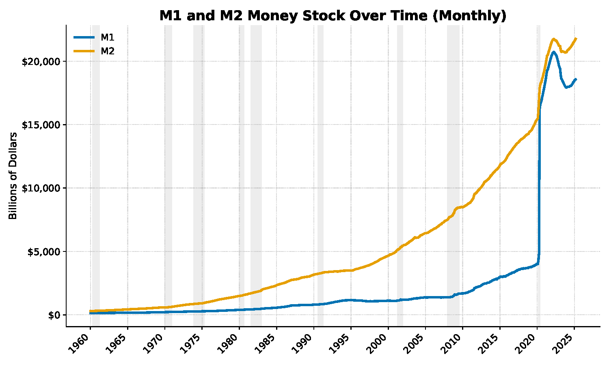

By the end of this unit I should be able to:
- Explain the three functions of money.
- Articulate how we measure the supply of money.
- Understand the roles of the central bank in the economy.
- Explain how the process of financial intermediate determines the money supply.
- Understand the components of the bank's balance sheet.
- Explain the role of the Federal Reserve in determining the supply of money.
- Understand the role that the interest rate on reserves plays in the economy.
- Explain how the Fed decides what interest rate to target.
- Articulate how the interest is determined using graphs.
NotationImportant Notation
- : money supply
- : money multiplier, equals
- : reserve ratio, percent of deposits held on reserve at the Fed,
- : total number of reserves
- : total number of deposits
- : price level
- : interest rate
- : GDP (income, expenditure, production)
An Overview of Money
What is Money?
- The of Money
- Medium of : What sellers generally accept and buyers generally use to pay for goods and services.
- Without money we would be force to goods directly ( economy)
- Barter economies require a coincidence of wants.
- (and ) is wasted searching for someone to trade with.
- Using money for transactions allows the economy to run .
- property of money: It is portable and readily accepted and thus easily exchanged for goods.
- Without money we would be force to goods directly ( economy)
- Store of : An asset that can be used to transport purchasing power from one time period to another.
- The main disadvantage of money as a store of value is that the of money when the prices of goods and services .
- Unit of : A standard unit that provides a consistent way of quoting prices.
- Medium of : What sellers generally accept and buyers generally use to pay for goods and services.
- The of Money
- monies: Items used as money that also have intrinsic value in some other use.
- Examples: Precious Metals (gold, silver, copper, etc), agricultural commodities (grain, rice, salt, etc), shells, etc.
- , or , money: Items designated as money that are intrinsically worthless
- tender: Money that a government has required to be accepted in settlement of debts.
- One of the problems with fiat currency is that because the government determines how of it there will be, there is always a temptation to more money.
- debasement: The decrease in the value of money that occurs when its supply is increased rapidly.
- This problem is dealt with in many countries by having a partially central bank that controls the supply of money.
- monies: Items used as money that also have intrinsic value in some other use.
How Do We Measure the Supply of Money in the United States
- Money measured in terms of how it is (going from most liquid to least liquid).
- Most liquid: Money ()
- This is money that can be directly used for .
- Includes and ( and accounts)
- Next most liquid: Money ()
- This includes everything in M1 plus money market accounts, CDs, and other near monies
- monies: Close substitutes for transactions money.
- This includes everything in M1 plus money market accounts, CDs, and other near monies
- Beyond M2
- One of the very broad definitions of money includes the amount of available on credit cards as part of the money supply.
- There are no for deciding what is and is not money.
- For our purposes, "money" will always refer to money, or .
- Most liquid: Money ()

| Component | Before May 2020 | After May 2020 |
|---|---|---|
| Currency in circulation (outside banks) | Yes | Yes |
| Traveler's checks | Yes | Yes |
| Demand deposits (e.g., checking accounts) | Yes | Yes |
| Other checkable deposits (e.g., NOW accounts) | Yes | Yes |
| Savings deposits (including money market deposit accounts) |
The Types of Debt
Loans
- Issued by to individual .
- Examples: Car loans, student loans, mortgages, etc.
- Three Properties of a loan
- Amount borrowed, called the .
- Rate
- This is the amount the borrower in order to get the principal.
- Typically an annual percentage rate (APR): the borrower has to pay a percentage of the remaining balance with each payment.
- The interest rate in the loan contract is called the interest rate.
- of the loan
Bonds (Securities)
- Issued by governments and corporations when they need to raise sums of money than what could be acquired through a bank .
- Properties of a Bond
- Date: the length of time before the bond holder is paid back.
- Ranges from 1 month to 30 years.
- Value: the amount paid out to the bond holder when the maturity date is reached.
- : a fixed amount paid (typically semi-annually or annually) to the bond holder, similar to the interest payment.
- Date: the length of time before the bond holder is paid back.
- Example of a bond:
- Maturity: years
- Face Value: whoever owns the bond will receive when it reaches maturity ( years from now)
- Coupon: the bond (the person who owns it) will receive a payment each until the maturity date is reached.
- How do Bonds Work?
- Suppose the government wants to raise $50 billion dollars to provide an after school program for low-income households. Do they issue a $50 billion dollar bond?
- , they would issue many bonds that different individuals will purchase (typical bond face value is $).
- Consider our example bond. This bond will be sold in the bond .
- When the bond is sold the bond issuer is contractually obligated to the terms of the bond.
- When they go to the market, they would like to sell their bond for but this is guaranteed, the market determines the of the bond.
- If someone isn't willing to pay for this bond, the issuer would have to the coupon payment.
- IMPLICATION: The coupon and bond price are related.
- Suppose the government wants to raise $50 billion dollars to provide an after school program for low-income households. Do they issue a $50 billion dollar bond?
Common Types of Bonds/Securities
- Securities (sometimes called t-bills or government bonds) are bonds issued by the U.S. Federal Government.
- Bonds are debt issued by corporations.
- Backed Securities (MBS)
- Mortgages pose a problem for banks: they are a dispersement of cash that is paid back over a period of time (typically 30 years).
- Banks will together a group of mortgages into a single and sell it to financial institutions, retirement funds, individuals.
- Banks receive liquidity.
- Those who by the MBS receive payments (as people pay off the mortgage) over the life of the asset.
What Determines the Money Supply: The Role of Banks
The Central Bank
- The central bank in the United States is called the Reserve (or ).
- Founded in 1913 by an act of Congress (to which major reforms were added in the 1930s)
- The Fed is an agency in that it does not take orders from the president or from Congress.
- This is and we will see why as the class continues.
- Responsibilities of the Fed
- Policy
- Conducted by the Federal Market Committee ()
- A group composed of the 7 members of the Fed's Board of Governors, the president of the New York Federal Reserve Bank, and 4 of the other 11 district bank presidents on a rotating basis
- It sets goals concerning the supply and rates
- This will be the focus of this class.
- Conducted by the Federal Market Committee ()
- It is the bank's
- Like individual's deposit money at their bank, banks will money at the Federal Reserve Bank.
- Clear payments
- Assist banks that are in financial positions
- Lender of resort: The Fed provides funds to troubled banks that cannot find any other sources of funds.
- Manages rates and the nation's foreign exchange reserves.
- banking practices and standards.
- Policy
How do Banks Work?
- In the economy, banks perform the function of intermediation.
- Financial Intermediation: transferring from savers to borrowers.
- The process of financial intermediation:
- : the amount of money received by banks from savers.
- What can banks do with deposits?
- The can hold onto them.
- The money banks hold onto is called .
- Reserves are typically deposited in the bank's at the Federal Reserve Bank.
- Reserves also include the in the bank's vault.
- They can make either to individuals directly or by bonds/securities.
- The can hold onto them.
The Bank's Balance Sheet
- Banks are businesses and as such they have the same balance sheet accounting: equal .
- We are going to consider a balance sheet.
- The Bank's : what they owe.
- This is the money banks hold on : they owe it to the depositors.
- The Bank's : things a firm owns that are worth something.
- : The deposits that a bank has at the Federal Reserve Bank plus its cash on hand.
- Due to regulations, banks are to hold a certain of their deposits on reserve in their account at the Fed.
- This is called the reserve ratio.
- Any reserves held in of the required number of reserves are called reserves. reserves =reserves −reserves
- Due to regulations, banks are to hold a certain of their deposits on reserve in their account at the Fed.
- : The deposits that a bank has at the Federal Reserve Bank plus its cash on hand.
The Creation of Money
- Suppose we have a situation in with there are many banks with a required reserve ratio of %.
- Assume that banks only hold their number of reserves (% of their deposits).
- Additionally, assume that no one holds .
- Then there is a $ deposit put into one of the banks.
Bank 1
| Assets | Liabilities | ||
|---|---|---|---|
| Reserves | Deposits | ||
| Assets | Liabilities | ||
|---|---|---|---|
| Reserves | Deposits | ||
| Loans | |||
| Assets | Liabilities | ||
|---|---|---|---|
| Reserves | Deposits | ||
| Loans | |||
- In panel 1, there is an initial deposit of $ in Bank 1.
- In panel 2, Bank 1 makes a loan of $ by creating a deposit of $.
- A check for $ by the borrower is then written on Bank 1 (panel 3) and deposited in Bank 2 (panel 1).
Bank 2
| Assets | Liabilities | ||
|---|---|---|---|
| Reserves | Deposits | ||
| Assets | Liabilities | ||
|---|---|---|---|
| Reserves | Deposits | ||
| Loans | |||
| Assets | Liabilities | ||
|---|---|---|---|
| Reserves | Deposits | ||
| Loans | |||
- In panel 1, there is an initial deposit of $ in Bank 2.
- In panel 2, Bank 2 makes a loan of $ by creating a deposit of $.
- A check for $ by the borrower is then written on Bank 2 (panel 3) and deposited in Bank 3 (panel 1).
Bank 3
| Assets | Liabilities | ||
|---|---|---|---|
| Reserves | Deposits | ||
| Assets | Liabilities | ||
|---|---|---|---|
| Reserves | Deposits | ||
| Loans | |||
| Assets | Liabilities | ||
|---|---|---|---|
| Reserves | Deposits | ||
| Loans | |||
Figure 1 — How a $100 deposit becomes $500 of money
Figure description loading.
- In panel 1, there is an initial deposit of $ in Bank 3.
- In panel 2, Bank 3 makes a loan of $ by creating a deposit of $.
- A check for $ by the borrower is then written on Bank 3 (panel 3) and deposited in Bank 4.
- The process .
- How much money is there in the economy?
- We measure money using , which is the total amount of held ( in this example) plus the total number of .
- The total number of deposits are:
- This means that from the initial $ deposits, we have created $ of additional deposits, resulting in a money supply of $.
- Fortunately, we do not need to do these t-accounts every time we want to find the money supply.
- Multiplier: The multiple by which deposits can increase for every dollar increase in reserves; equal to 1 divided by the reserve ratio.
- The reserve ratio (rr) is by the individual .
- In our example we set it to the required reserve ratio (20%), but in practice banks can set it ( lower).
- The total money supply () is:
- where is the total number of .
- Multiplier: The multiple by which deposits can increase for every dollar increase in reserves; equal to 1 divided by the reserve ratio.
- How many are there in the economy at the end of this process?
- We started with $ worth of reserves.
- When this process is completed we have:
- IMPORTANT: Financial intermediation does change the total number of in the economy.
- The Fed has complete over the total number of reserves in the economy.
- What We Learned: How do you change the money supply?
- Change the total number of .
- Change the multiplier by changing the ratio.
What Determines the Money Supply: The Role of Federal Reserve
Changing the Number of Reserves: Open Market Operations (pre-Great Recession)
- What is an market operation?
- An open market operation is the purchase and sale of bonds (securities) from/to by the Reserve.
- An open market of treasury bonds from banks will the number of reserves the banks have.
- The Fed treasury bonds held by the bank and in exchange puts more in the bank's account at the Fed.
- An open market of treasury bonds to banks will the number of reserves the banks have.
- The Fed treasury bonds to the bank and in exchange takes out of the bank's account at the Fed.
- An open market of treasury bonds from banks will the number of reserves the banks have.
- Open market operations changes the number of banks have, thus changing the number of they make.
- An open market operation is the purchase and sale of bonds (securities) from/to by the Reserve.
ExampleExample: Open Market Operations
- Suppose we have the following economy:
- R =
- rr =
Scenario 1: Open Market Purchase
- Suppose the Fed purchases worth of treasury bonds from banks.
- This will the number of bank reserves by 50:
- The new money supply is:
Scenario 2: Open Market Sale
- Suppose the Fed sell worth of treasury bonds to banks.
- This will the number of bank reserves by 50:
- The new money supply is:
Changing the Money Multiplier: Interest on Reserves (Post-Great Recession)
- We have seen that when a bank receives a deposit it has two options:
- Use it to make ().
- Place it in their account at the Fed: hold it as ().
- The reserve ratio (bank's ) tells us what of deposits they hold on reserve vs. loan out.
- How do they decide their reserve ratio?
- Same way firms decide anything else, by asking: what is the most decision?
- How do they decide their reserve ratio?
- In October 2008, the Fed started paying to banks based on the amount of money they held on .
- This is kind of like how the bank pays you based on the amount of money in your account.
- Banks like this because holding money on reserve at the Fed is than loaning it out.
- If they can earn on their reserves, they are likely to loan the money out.
- Now the Fed can the banks' reserve ratios by the interest it pays on reserves ():
ExampleExample: Changing the Interest Rate the Fed Pays Banks on Reserves
- Suppose we have the following economy:
Scenario 1: Increase IOR
- Suppose the Fed the IOR.
- This will cause banks to hold a percentage of deposits on reserve:
- Suppose the reserve ratio increases from to
- The new money supply is:
- This will cause banks to hold a percentage of deposits on reserve:
Scenario 2: Decrease IOR
- Suppose the Fed the IOR.
- This will cause banks to hold a percentage of deposits on reserve:
- Suppose the reserve ratio falls from to
- The new money supply is:
- This will cause banks to hold a percentage of deposits on reserve:
How is the Interest Rate Determined?
- What determines the value of a particular interest rate?
- Ask ourselves: what is an interest rate?
- It is the of money.
- Like any other , it is determined by the forces of and .
- Ask ourselves: what is an interest rate?
- Real Money Vs Nominal Money
- Money: the number of dollars that you have.
- Money: the amount of that can be purchased using the dollars you possess.
- This can be calculated as the number of dollars (M) divided by the level (P):
- Which do we care money about? money.
- Supply of Real Money Balances ()
- : determined by policy
- : determined in (shown later in the class, will be taken as given for now).
- Demand for Real Money Balances
- This should not be confused with the demand for , which is your total number of assets.
- Money demand is the amount of money that you want to hold in a form for transactions.
- Depends on your income.
- Depends on the interest rate.
- The interest rate is the cost of holding money.
- The equilibrium interest rate is determined by the intersection of and .
Figure 2 — The market for real money balances
Figure description loading.
What Changes the Interest Rate?
Figure 3 — A rise in the price level
Figure description loading.
Increase in Prices
An in the price level causes the interest rate to .
Figure 4 — A rise in income
Figure description loading.
Increase in Income
An in income causes the interest rate to .
Figure 5 — A rise in the money supply
Figure description loading.
Increase in the Money Supply
An in the money supply causes the interest rate to .
Key result
- Increase in prices
- the supply of real money balances (M/P).
- The ( rate) of real money balances goes .
- Increase in Income
- the demand for real money balances
- The ( rate) of real money balances goes .
- Increase in the money supply
- To the money supply,
- the supply of real money balances (M/P).
- The ( rate) of real money balances goes .
The Interest Rate Rule
- The interest rate in the economy depends on:
- the Level (P)
- Relationship: .
- the level of (Y)
- Relationship: .
- the money supply (M)
- Relationship: .
- the Level (P)
- From this we get the interest rate rule:
- where c, d, e are constants.
Figure 6 — The interest rate rule
Figure description loading.
How Does the Fed Decide What Interest Rate to Target?
- At their next meeting is the Fed going to: rates, rates, or keep them ?
- How do they make this decision?
- The Federal Reserve Act of 1977 established what is known as the mandate.
- The Fed is required to:
- Maintain stable .
- Maximize
- We will see later that these goals are often in with each other.
- The Fed is required to:
- Fed policy can often be described as leaning the wind.
- When the economy is , they try to bring it back .
- When the economy is , they try to bring it back .
The Fed Rule
- At their next meeting is the Fed going to: rates, rates, or keep them ?
- How do they make this decision?
- The Federal Reserve Act of 1977 established what is known as the mandate.
- The Fed is required to:
- Maintain stable .
- Maximize
- We will see later that these goals are often in with each other.
- The Fed is required to:
- Fed policy can often be described as leaning the wind.
- When the economy is , they try to bring it back .
- When the economy is , they try to bring it back .
The Fed Rule
- rule: How the Fed determines the Federal Funds Rate target given the state of the economy.
- Output (Y): When output is its natural rate, the Fed will its Federal Funds rate target.
- Prices (P): When prices , the Fed will its Federal Funds rate target.
- Other factors (Z): things related to unemployment or inflation that may impact the Fed's decision regarding the Federal Funds Rate.
- For instance, the Fed may wait to see how a / policy is going to impact the economy before changing the interest rate.
Accessibility accommodation: If you have an official ADA
accommodation and are having difficulty using this page, please contact your
professor directly to request alternative materials.